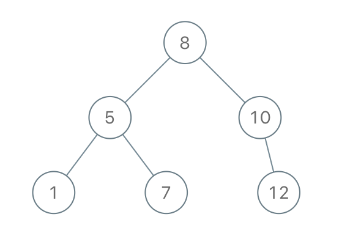

| Category | Difficulty | Likes | Dislikes |
|---|---|---|---|
| Algorithms | Medium | 6676 | 93 |
array | stack | tree | binary-search-tree | monotonic-stack | binary-tree
amazon | microsoft | facebook | google | bloomberg
Given an array of integers preorder, which represents the preorder traversal of a BST (i.e., binary search tree), construct the tree and return its root.
It is guaranteed that there is always possible to find a binary search tree with the given requirements for the given test cases.
A binary search tree is a binary tree where for every node, any descendant of Node.left has a value strictly less than Node.val, and any descendant of Node.right has a value strictly greater than Node.val.
A preorder traversal of a binary tree displays the value of the node first, then traverses Node.left, then traverses Node.right.
Example 1:

Input: preorder = [8,5,1,7,10,12]
Output: [8,5,10,1,7,null,12]Example 2:
Input: preorder = [1,3]
Output: [1,null,3]
Constraints:
1 <= preorder.length <= 1001 <= preorder[i] <= 1000preorder are unique.